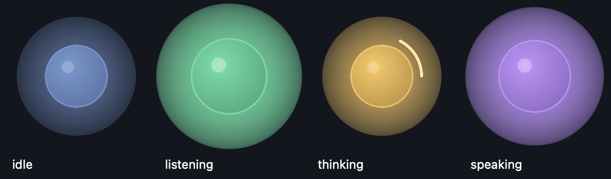

Talk to your coding agent. Hear what it's doing. Lean back — a floating orb keeps watch over Claude Code so you don't have to.
Apple Silicon Macs · everything runs locally · MIT-spirited weekend software

idle · listening · thinking · speaking — the orb is the whole interface
One line, in a terminal:
bash <(curl -fsSL https://zeroshotmind.github.io/ollie/install.sh)Or download the DMG above and right-click → Open “Install Ollie.command”.
Either way the installer builds Ollie on your Mac — that's what lets macOS grant
permissions to Ollie by name instead of blocking an unnotarized download.
It fetches the source, sets up an isolated Python env with
uv, and compiles the app bundle.
You'll want Ollama with qwen2.5:3b-instruct
pulled — the installer walks you through it.
Hold right Option, speak, release — Whisper (MLX) types your words at the cursor of your terminal.
A local LLM decides what's genuinely new and worth saying, and says it — brief, loss-less, or verbatim, in four tones.
Give it a goal and it keeps prompting your agent until the goal is done — fenced by turn caps, focus checks and stall detection.
Instant macOS say, or the Kokoro neural voice running ~50× real-time on the Neural Engine.
Whisper, Qwen and Kokoro all run on-device. The built-in settings report shows every model and API — no cloud anywhere.
No dock icon, no menu bar. A draggable orb that never steals focus; right-click it for everything.
macOS guards each capability behind a permission, and each fails silently — so this is the one manual step. System Settings → Privacy & Security:
| Permission | Why Ollie needs it |
|---|---|
| Input Monitoring | hear the push-to-talk key |
| Accessibility | type your transcribed speech into the terminal |
| Microphone | record while the key is held |
Ollie requests all three at first launch and appears in each list by itself —
flip the toggles, then quit and reopen it once. ~/.ollie/src/run.sh --doctor verifies everything.